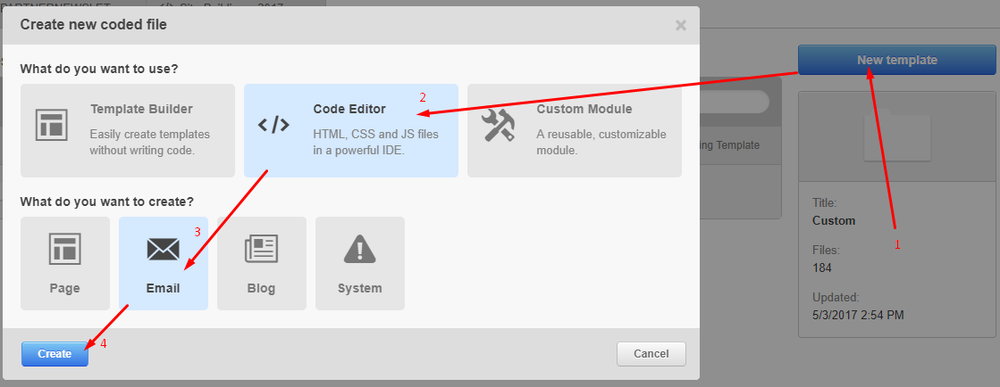

<!DOCTYPE html><html><head><meta charset=UTF-8 /><meta content="IE=edge,chrome=1" http-equiv=X-UA-Compatible /><meta content="width=device-width" name=viewport /><script>var host = "hellojason.net";
if ((host == window.location.host) && (window.location.protocol != "https:"))
  window.location.protocol = "https";</script><meta content="index,follow" name=robots /><link href="../../apple-touch-icon.png?v=Gvm449pRYq" rel=apple-touch-icon sizes=180x180 /><link href="../../favicon-32x32.png?v=Gvm449pRYq" rel=icon sizes=32x32 type="image/png"/><link href="../../favicon-16x16.png?v=Gvm449pRYq" rel=icon sizes=16x16 type="image/png"/><link href="/site.webmanifest?v=Gvm449pRYq" rel=manifest /><link color="#a432f4" href="../../safari-pinned-tab.svg?v=Gvm449pRYq" rel=mask-icon /><link href="../../favicon.ico?v=Gvm449pRYq" rel="shortcut icon"/><meta content="#a432f4" name=msapplication-TileColor /><meta content="#ffffff" name=theme-color /> <title>Hello Jason / Email Template Generator</title><meta content="How a single email request morphed into a robust email template generator." name=description /><link href="../../assets/stylesheets/site-64105e90.css" rel=stylesheet /><link href="https://hellojason.net//projects/email-template-generator/" rel=canonical /><script>(function(i,s,o,g,r,a,m){i['GoogleAnalyticsObject']=r;i[r]=i[r]||function(){
(i[r].q=i[r].q||[]).push(arguments)},i[r].l=1*new Date();a=s.createElement(o),
m=s.getElementsByTagName(o)[0];a.async=1;a.src=g;m.parentNode.insertBefore(a,m)
})(window,document,'script','//www.google-analytics.com/analytics.js','ga');

ga('create', 'UA-48926813-1', 'auto');
ga('send', 'pageview');
ga('set', 'anonymizeIp', true);</script></head><body class="projects projects_email-template-generator projects_email-template-generator_index case-study"></body><header class=banner role=banner><div id=primary-navigation role=navigation><div class=navbar-header><a class=logo href="/" title="Hello Jason Portfolio"><svg id=hellojason-logo xmlns="http://www.w3.org/2000/svg" width="0.56in" height="0.56in" viewBox="0 0 40.6 40.6"><defs><style>.cls-1{fill:#fbac2d;}</style></defs><title>hello-jason-logo</title><path class=cls-1 d="M9.3,13.1a4.11,4.11,0,0,1,2.8-.7H29.9a4.42,4.42,0,0,1,2.9.7,3.39,3.39,0,0,1,.8,2.5v0.5H28.4A1.43,1.43,0,0,0,27,17.5v0.9q3.75,0,4.8.9c0.7,0.6.9,2.9,0.9,2.9a28.1,28.1,0,0,1,.1,2.9V29a1.43,1.43,0,0,1-1.4,1.4h-8A1.43,1.43,0,0,1,22,29V28.1c0-1.9.2-3.1,0.7-3.6a3.37,3.37,0,0,1,1.7-.6,1.42,1.42,0,0,0,1.4-1.2,1.33,1.33,0,0,0-1.4-1.1H16.9A1.43,1.43,0,0,0,15.5,23v0.7c1.6,0,2.7.2,3.2,0.7a5.14,5.14,0,0,1,.6,2.3,23.48,23.48,0,0,1,.1,2.6A1.33,1.33,0,0,1,18,30.4H11A1.43,1.43,0,0,1,9.6,29V23.5c0-2.2.3-3.5,0.8-4.1a4.15,4.15,0,0,1,1.8-.7,15.26,15.26,0,0,1,1.8-.1,1.23,1.23,0,0,0,.4-1.2A1.33,1.33,0,0,0,13,16.2H8.5V15.5a2.92,2.92,0,0,1,.8-2.4" transform="translate(-0.7 -0.7)"/><path class=cls-1 d="M21,3.4A17.6,17.6,0,1,1,3.4,21,17.63,17.63,0,0,1,21,3.4m0-2.7A20.3,20.3,0,1,0,41.3,21,20.31,20.31,0,0,0,21,.7h0Z" transform="translate(-0.7 -0.7)"/></svg><span class=tagline>Hello, I'm Jason.</span></a></div><div id=primary-container><ul class=nav><li class=nav-item-blog><a href='/'>Blog</a></li><li class=nav-item-projects><a href='/projects/'>Projects</a></li><li class=nav-item-about><a href='/about/'>About</a></li></ul></div></div></header></html><main role=main><section class="hero odd"><div class=content><h1><span>How a single email request morphed into a robust email template generator</span></h1><p class=categories><span>Design, Development</span></p></div></section><section class=summary><div class=content><h2>Just a newsletter, please</h2><p>This project originated from a request for a single HubSpot email template&mdash;the monthly newsletter&mdash;as part of WP Engine's initiative to bring more value to customers and partners while also applying updated brand styles. I worked with our creative director and stakeholders from Demand Gen to Customer Experience and designed a fresh newsletter that was on brand and could accomplish the goal.</p><p>Great, but this case study is about the journey afterwards.</p></div></section><section class="first-attempt odd"><div class=content><h2>First attempt</h2><p>I used HubSpot's visual editor for my first attempt at building the template, hoping that non-technical folks in the Marketing department could manipulate it as needed in the future.</p><figure><figcaption>HubSpot's drag &amp; drop visual editor</figcaption></figure><p>But the HubSpot editor proved hopeless for 2 reasons:</p><ol class=big-list><li><span class=number>1</span> <span class=text>HubSpot's <abbr title='graphical user interface'>GUI</abbr> builder was simply unable to accommodate parts of the design&mdash;I had to switch to hand-coding mode, which made it inaccessible to non-technical folks.</span></li><li><span class=number>2</span> <span class=text>HubSpot's GUI builder generated a bloated mess of an email. Code dignity aside, certain email clients truncated the email because of its file size, hiding content behind a tiny "show entire email" text link at the bottom.</span></li></ol><p>The newsletters went out on time, but click-through rates tanked. I knew that I would have to rethink the project's execution. But this newsletter goes out every month, and I can't be the bottleneck.</p></div></section><section class=second-attempt><div class=content><h2>Second attempt</h2><p>Email requests for other departments also came in during this time. Hand-coding emails in 2017 is torturous, so I decided that my next attempt could be more elegant and reusable; I dug deeper into the needs of all these requests and discovered they all were an effort to support the company’s north star goal of increasing brand awareness through visual consistency.</p><p>The shared goal of all these requests surfaced a larger, company-wide problem, and I could solve a greater need&mdash;consistent and manageable email templates, company-wide, from a single codebase. But I can't be the bottleneck&hellip;</p><h3>Time for research</h3><p>I considered immediate and long-term needs:</p><ul class=big-list><li><span class=number>»</span> <span class=text><strong>Time is important.</strong><br>The most crucial point: our newsletter is monthly, so I had about 3 weeks to deliver a fixed version of that template, regardless of how I chose to do that.</span></li><li><span class=number>»</span> <span class=text><strong>Consistency is important.</strong><br>Emails will be visually similar, so they should share base layout components and stylesheets.</span></li><li><span class=number>»</span> <span class=text><strong>Speed is important.</strong><br>New templates will be created regularly, as we build out our library of email templates. I should not be the only person capable of cranking out new ones.</span></li><li><span class=number>»</span> <span class=text><strong>Juggling is important.</strong><br>Multiple templates will probably be developed simultaneously, and email programs are not known for their version control.</span></li><li><span class=number>»</span> <span class=text><strong>Agility is important.</strong><br>We will be completely overhauling our main website over the coming months, meaning all these email templates will be updated again to match the new design direction.</span></li><li><span class=number>»</span> <span class=text><strong>Enablement is important.</strong><br>Non-technical folks should eventually be able to update content themselves, such as for the monthly newsletter.</span></li><li><span class=number>»</span> <span class=text><strong>Simplicity and documentation is important.</strong><br>My solution should be approachable by other developers for contributions and maintenance.</span></li></ul></div></section><section class="build-the-thing odd"><div class=content><h2>Building the thing</h2><p>I used <a href="https://github.com/hello-jason/magento-transactional-email-generator">a project from my past</a> as an established starting point for this endeavor. I knew that project well, and I knew it could be expanded to meet our requirements. So, I felt it would let me deliver the time-sensitive newsletter template quickly and also be a suitable foundation to satisfy our future needs.</p></div></section><section class=deep-dive><div class=content><h2>Project component breakdown</h2><h3>Core</h3><p>My project combines <a href="https://middlemanapp.com/">Middleman</a>, a static website framework, with <a href="http://premailer.dialect.ca/">Premailer</a>, a package that modifies HTML files to be email-friendly. The result is a modern web stack that developers can learn quickly and a build process that generates self-contained, email-friendly HTML files to be placed into any email platform.</p><h3>HubSpot helpers</h3><p>I developed a series of helper methods for HubSpot integration. They spit out placeholder HTML when viewing locally, but that is replaced with HubSpot <a href="http://designers.hubspot.com/docs/hubl/hubl-module-syntax-and-parameters">HUBL snippets</a> when building for production. HubSpot recognizes these snippets and replaces them with meaningful content, such as the current month or an editable rich text area.</p><h3>Documentation</h3><p>I documented the crap out of this project, specifically the monthly newsletters, with step-by-step instructions and screenshots.</p></div></section><section class="improvements odd"><div class=content><h2>If it ain't broke, make it better</h2><p>The newsletter process worked great for a few months, so I devoted time with each newsletter to improve the project.</p><ul class=big-list><li><span class=number>»</span> <span class=text>A flag could be set to let the build process know which email program each template was for, such as HubSpot, Gainsight, or Netsuite. This would show or hide template parts that were specific to each platform.</span></li><div id=""><li><span class=number>»</span> <span class=text>Data was decoupled from the view template and moved to individual JSON files. This made copying/pasting content from Google Docs much easier and established a schema to build a UI onto for copywriters to enter content.</span></li></div><li><span class=number>»</span> <span class=text>Smarter templates that automatically find the matching view and content for each month.</span></li></ul></div></section><section class=future><div class=content><h2>The future</h2><p>The newsletter workflow is quite efficient, but it still must go through a developer each month. And meticulously iterating over content changes is&hellip;tedious. The next step for me is to explore something like <a href="http://www.alpacajs.org/">Alpaca Forms</a>, which generates a web form based on a JSON schema. This could allow the content team to tweak the copy themselves and simply give my team a JSON blob to run through the generator.</p><p>The obvious step after that is to add the build process directly into that web form, so they can edit, build, and paste the email templates directly into HubSpot 100% on their own. One day&hellip;</p></div></section></main><footer id=footer></footer><script src="//assets.codepen.io/assets/embed/ei.js" async=true></script>